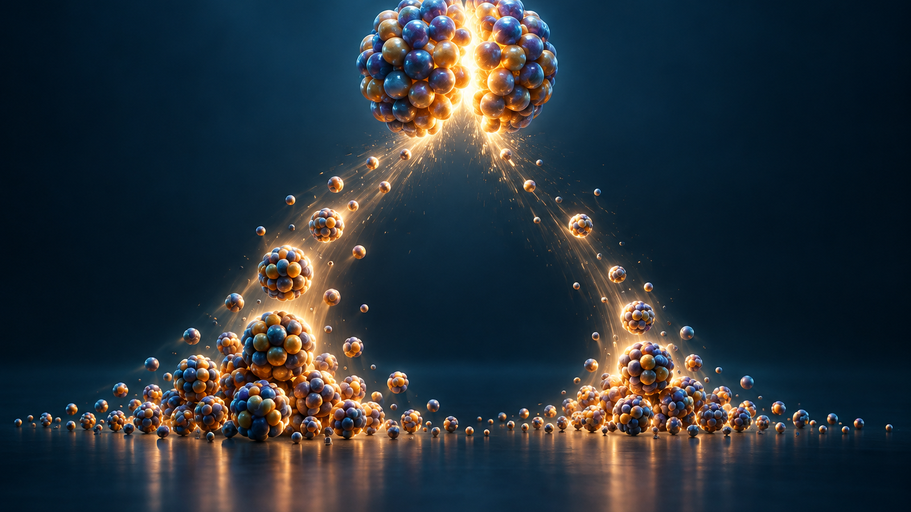
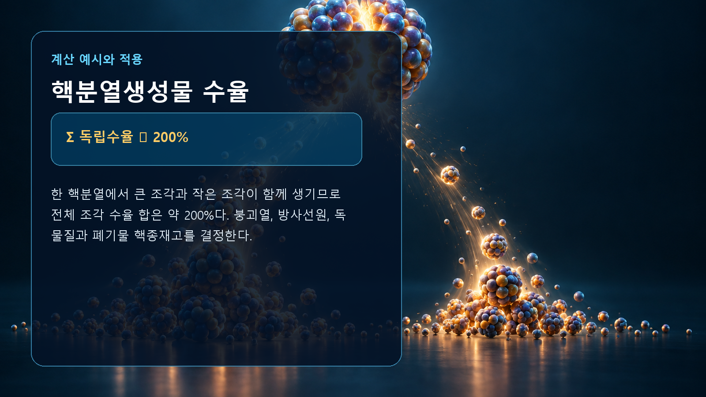

질량·에너지·핵반응 · 036
핵분열생성물 수율
한 번의 핵분열이 만드는 두 봉우리 분포

핵심 개념
열중성자 핵분열은 흔히 질량수가 서로 다른 두 조각을 만들어 수율곡선이 두 봉우리 형태를 보인다.
핵분열생성물 수율의 기본 원리
열중성자 핵분열은 흔히 질량수가 서로 다른 두 조각을 만들어 수율곡선이 두 봉우리 형태를 보인다. 관련 값을 계산할 때에는 단위와 계의 경계를 먼저 정해야 하며, 평균적인 설명과 개별 핵종의 실제 자료를 구분해야 합니다.
관계식과 계산 예시
Σ 독립수율 ≈ 200%가 핵심 관계입니다. 한 핵분열에서 큰 조각과 작은 조각이 함께 생기므로 전체 조각 수율 합은 약 200%다. 계산에서는 입력값의 단위를 일관되게 맞추고, 근삿값이 적용되는 범위를 확인해야 합니다.

원자력공학에서의 활용
붕괴열, 방사선원, 독물질과 폐기물 핵종재고를 결정한다. 이 개념 하나만으로 실제 계통을 모두 설명할 수는 없으므로, 평가 목적에 맞는 핵자료와 재료조건, 에너지 범위 및 불확실성을 함께 적용해야 합니다.
해석에서 주의할 점
그림은 이해를 위한 개념 표현이며 입자 크기와 거리, 시간척도를 실제 비율로 그린 것이 아닙니다. 관계식은 대표적인 형태이므로 정밀 해석에서는 핵종별 평가핵자료와 보존법칙, 실험조건을 우선합니다.